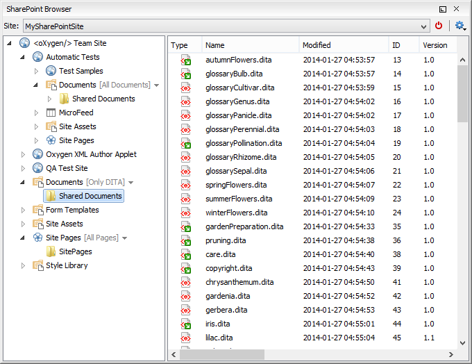

Open URL
To open this dialog box, go to File >  Open URL (or click the Open URL toolbar button), then choose the
Browse for remote
file option from the drop-down action list.
Open URL (or click the Open URL toolbar button), then choose the
Browse for remote
file option from the drop-down action list.
- Server URL
- Specifies the protocol (HTTP, HTTPS or FTP) and the host name or IP of the
server.Tip: When specifying a URL, follow these rules:
- To access an FTP server, write the protocol, host, and port (if using a
non-standard one). For example,
ftp://server.comorftp://server.com:7800/. - To access a WebDAV server, write the path to the directory of the WebDAV
repository along with the protocol and the host name. For example,
https://www.some-webdav-server.com:443/webdav-repository/.
Important: Make sure that the repository directory ends in a slash "/". For example,https://www.some-webdav-server.com:443/webdav-repository/ - To access an FTP server, write the protocol, host, and port (if using a
non-standard one). For example,
- Autoconnect
- If selected, the browse action is performed every time when you open the dialog box.
- User and Password
- To browse for a file on a server, you have to specify the user and password for the
server. This information is bound to the selected URL displayed in the File
URL combo box, and used further in opening/saving the file. If the
Save option is selected, then the user and password are saved
between editing sessions. The password is kept encrypted in the options file.Note: Your password is well protected. If the options file is used on another machine by a user with a different username, the password will become unreadable since the encryption is dependent on the username. This is also true if you add URLs that contain a username and password to your project.
- Connect
- When you click this button, the directory listing will be shown in the main section of the dialog box. If the selected URL points to a SharePoint server, a dedicated SharePoint browsing component is presented.
- Browser view
-
- If you are browsing a WebDAV or FTP repository, the items are presented in a
tree-like fashion. You can browse the directories, and make multiple selections.
Additionally, you may use the Rename,
Delete, and New Folder actions to
manage the file repository.Note: The file names are sorted in a case-insensitive way.
-
When you browse a SharePoint repository, a specialized component renders the SharePoint site content.
Figure 2. Browsing a SharePoint Repository The left side navigation area presents the SharePoint site structure in a tree-like fashion with various node types (such as sites, libraries, and folders).
Depending on the type of node, a contextual menu offers customized actions that can be performed on that node. The contextual menu of a folder allows you to create new folders and documents, import folders and files, and to rename and delete the folder.Note: The rename and delete actions are not available for library root folders (folders located at first level in a SharePoint library).Each library node displays a drop-down menu next to its name where you can select what you want to display for the current library node. This functionality is also available on the contextual menu of the node.
Figure 3. Drop-Down Menu to Select Which Items to Display 
The content of a folder is displayed in a tabular form, where each row represents the properties of a folder or document. The list of columns and the way the documents and folders are organized depends on the currently selected view of the parent library.
You can filter and sort the displayed items. To display the available filters of a column, click the filter widget located on the column header. You can apply multiple filters at the same time.Note: A column can be filtered or sorted only if it was configured this way on the server side.Figure 4. Column Filter 
- If you are browsing a WebDAV or FTP repository, the items are presented in a
tree-like fashion. You can browse the directories, and make multiple selections.
Additionally, you may use the Rename,
Delete, and New Folder actions to
manage the file repository.
- File URL
-
You can use this combo box to directly specify the URL to be opened or saved. You can type a URL such as http://some.site/test.xml (if the file is accessible through normal HTTP protocol), or ftp://anonymous@some.site/home/test.xml (if the file is accessible through anonymous FTP).
This combo box also displays the current selection when the user changes selection by browsing the tree of folders and files on the server.